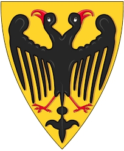

Kung av Tyskland. Blev högst 60 år.
876.
936 Germany. [1]
Henrik I av Sachsen (Henrik I Fågelfängaren), född 876, död 2 juli 936, var kung av Tyskland 919–936. Henrik Fågelfängaren var Sachsens förste kung av den Ottonska dynastin.[1]
Han var son till hertig Otto I av Sachsen och Hedvig av Babenberg.
Henrik var gift med Sankta Matilda av Ringelheim, även kallad Matilda av Sachsen, dotter till greve Dietrich av Westfalen och hans hustru Reinhild av Friesland.
Henrik invaderade nordiska områden, där danskarna hade besegrat friserna, och Widukind av Corvey skriver i sin Rex gestae Saxonicae att den danske kungen var vasall under Henrik, som också införlivade områden som tillhört venderna, som tillsammans med danskarna attackerat Tyskland.
Han erövrade också hertigdömet Bayern och kungadömet Lothringen. Dessa ärvdes av hans söner.
Barn
Kejsar Otto I, född 912, död 973
Gerberga av Sachsen 913, död efter 984
Henrik I av Bayern, född 919, död 955
Hedvig av Sachsen, född 922, gift med Hugo den vite, hertig av Franken.
Bruno, ärkebiskop av Köln, ärkebiskop